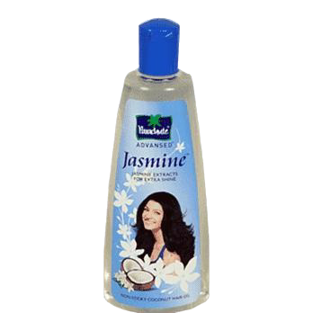
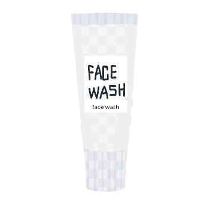
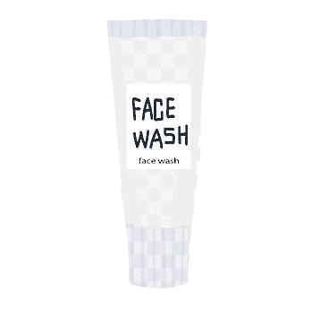
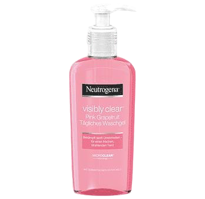
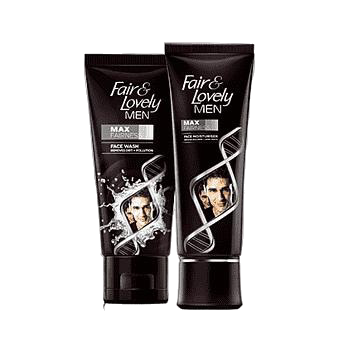

SSR HAIR OIL
🥥Coconut oil| 👁Eye Cream|👨🏽🦱Facil Cream Hair oil| 🧴Rosemary oil|
The Use and benefits of different formulations, Healthcare provider for appropriate dosage and use.
HOME
OUR PRODUCTS
ORDER ONLINE
CONTACTUS
Hair massage improves the blood circulation in your scalp which leads to better hair and scalp health. If you want stronger, softer and shinier hair you need to pamper your locks with the goodness of an oil massage. Since your hair is exposed to pollution, dust and chemical-laden products, you hair needs a little bit of TLC on a regular basis.
Your eyes will catch everyone’s attention! The skin around the eyes is sensitive and fragile, making it prone to dullness, ageing and puffiness. A Dermatologically tested daytime solution, The Man Company’s Under Eye Cream helps diminish unwanted under-eye concerns. Enriched with collagen, it delivers comprehensive benefits like improved skin elasticity and hydration. Quinoa, a rich source of Vitamin B, rejuvenates and adds brightness. Be consistent and patient when using this product to unveil younger and healthier under-eyes.
osemary lavender hair oil from India’s 1st preservative-free oils and soap brand and environmental, social, and governance (ESG) indie beauty brand. Soulflower rosemary lavender hair oil is 100% pure, natural & undiluted cold-pressed oil Rosemary lavender oil makes your hair healthier, stronger, and shinier, helps you get rid of dry scalp, and gives you in-depth nourishment. Soulflower rosemary lavender hair oil is rich in necessary nutrients.

 
 